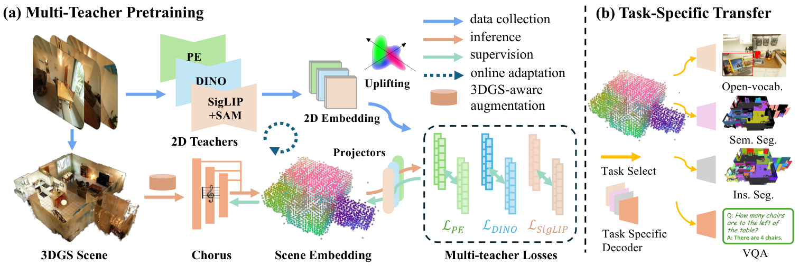
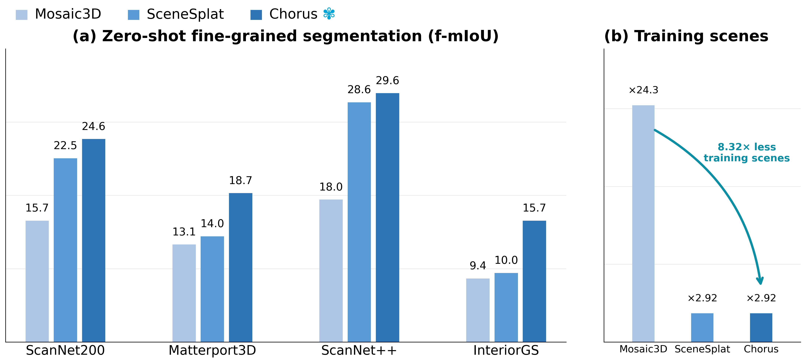
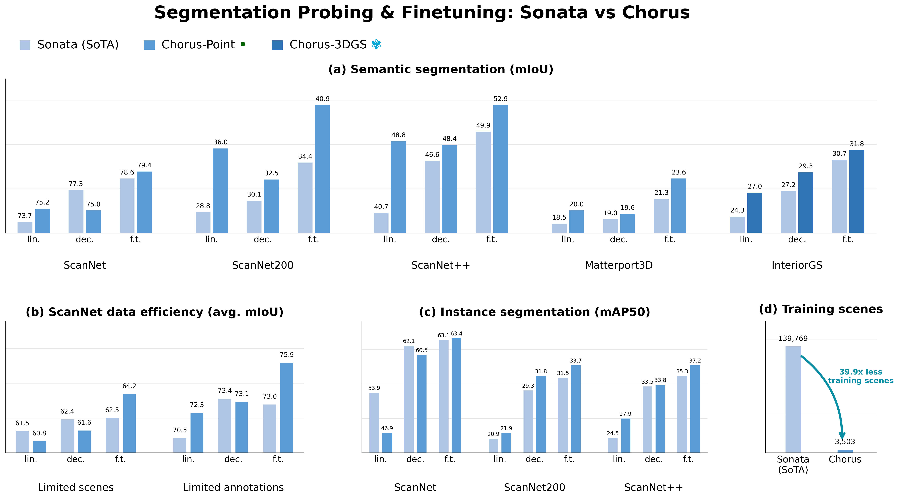
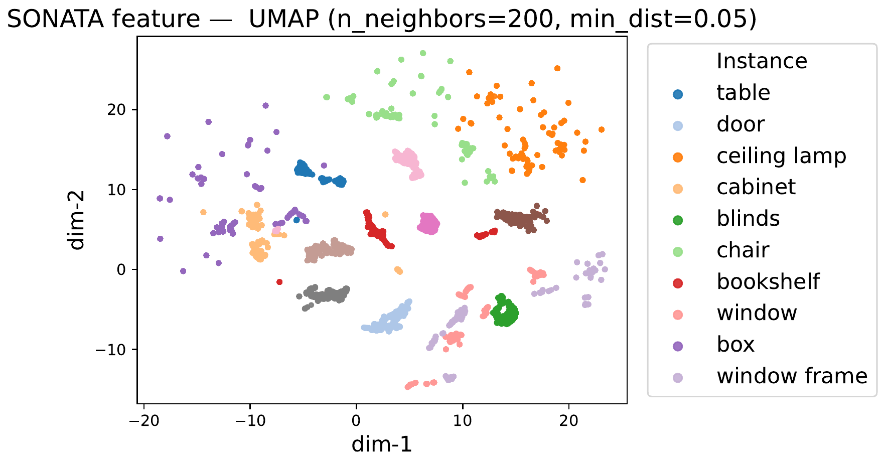
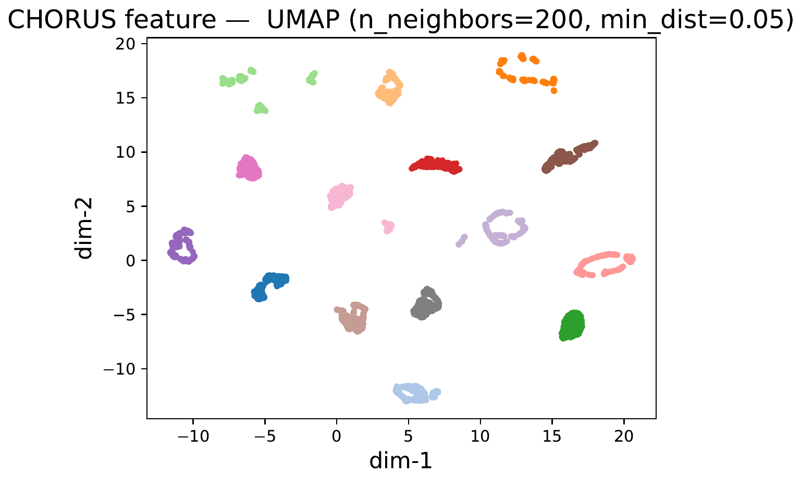
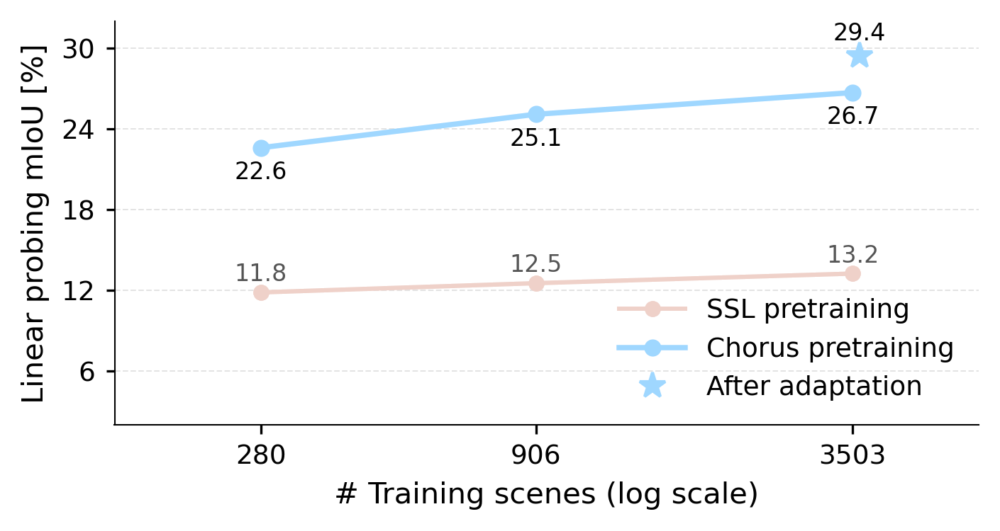
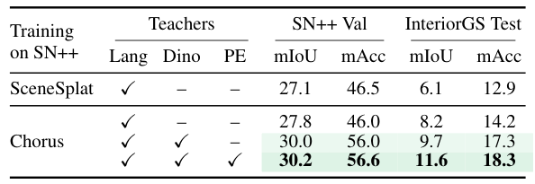
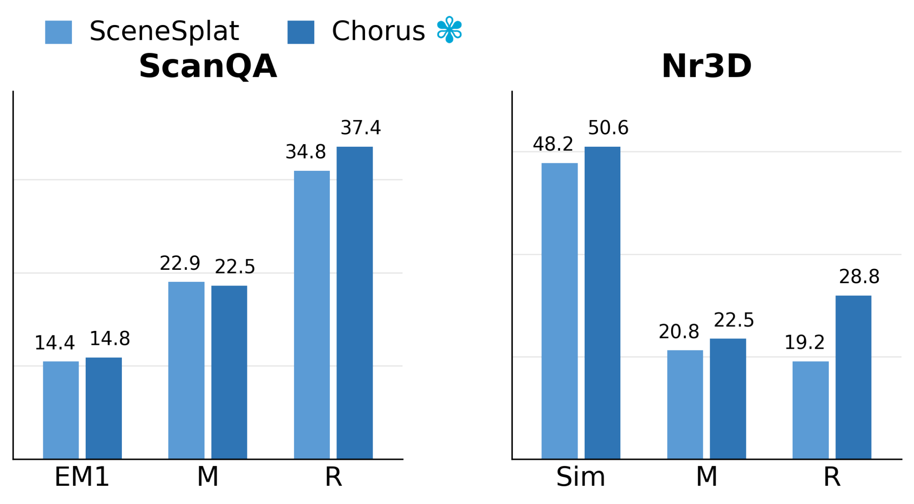
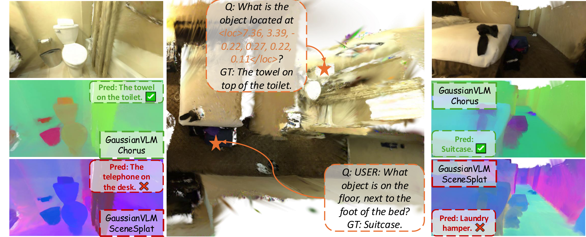

Existing 3DGS scene encoder focuses on language-aligned, open-vocabulary semantic learning. Objectness, correspondence, and fine spatial structure are less directly supervised.
Chorus: Multi-Teacher Pretraining for Holistic 3D Gaussian Scene Encoding
CVPR 2026 Oral
‡ Project lead. * Equal contribution. † Equal supervision.
1University of Amsterdam, 2ETH Zürich, 3INSAIT, Sofia University “St. Kliment Ohridski”, 4University of Trento
Motivation
From 3DGS Semantic Feature to Holistic Scene Encoder
SceneSplat showed that lifted 2D language features can supervise a feed-forward 3DGS scene encoder for open-vocabulary segmentation. Chorus starts from the same 3DGS substrate, but asks for a broader representation: a compact scene embedding that can support semantics, instances, querying, and VLM reasoning.
Current 3DGS scene-encoder limitations
A reusable scene embedding should go beyond open-vocabulary semantics: it should encode geometry, appearance, instance structure, and supports multiple downstream tasks.
SceneSplat encoder can retain close to 10K pooled multi-level tokens. LLM/VLM interfaces benefit from a smaller final-stage scene representation.
Chorus addresses these limits by pretraining
general-purpose 3D scene encoders from Gaussian splats via
multi-teacher distillation of 2D foundation models. A shared 3DGS
backbone captures common scene factors, while lightweight
teacher-specific projectors absorb language-aligned, generalist, and
object-aware embedding differences.
Multi-teacher supervision
Compact scene tokens
One encoder for diverse tasks

Demo
Chorus Inference Feature PCA
At inference, Chorus processes an entire reconstructed scene in one pass. The viewer pairs RGB rendering with learned feature PCA, making the scene embedding visible. The toggle switches the PCA view between Gaussian splats and their point-center proxy.
Interactive 3DGS viewer
Ready
Rendering
Chorus PCA
Interactive 3DGS viewer
Ready
Rendering
Chorus PCA
Interactive 3DGS viewer
Ready
Rendering
Chorus PCA
Method
Chorus Pipeline
Chorus distills language-aligned, generalist, and object-aware 2D teacher signals into a shared scene embedding using lightweight per-teacher projectors. The pretrained embedding transfers to downstream modules for semantic and instance segmentation, open-vocabulary queries, and 3D scene Q&A. For new 3DGS data, render-and-distill adaptation finetunes the trained encoder from rendered views with online teacher supervision.

3DGS Results
Zero-Shot 3D Semantic Segmentation
The core 3DGS evaluation is zero-shot fine-grained segmentation: the encoder produces language-aligned scene features without task-specific training on the target labels. Chorus improves over SceneSplat across these 3DGS semantic benchmarks while remaining compact and feed-forward.

Presentation
One More Thing
The Same Recipe Trains a Strong Point-Cloud Encoder
This is the surprising part: Chorus does not need a new pretraining framework nor new data for building point clouds encoder. We keep the same multi-teacher distillation pipeline and change only the encoder input channels.
same Chorus framework
multi-teacher distillation
SigLIP2
DINOv3
PE-Spatial
Before
3DGS input
coord
color
scale
opacity
quat
estimated normals
Full 3DGS Chorus consumes position, color, scale, opacity, and orientation. The point-cloud variant consumes only Gaussian centers, colors, and estimated normals; all teachers, losses, and distillation stages stay unchanged. At inference, the trained variant operates as a point-cloud encoder.

Why does Chorus framework transfer to point clouds?
We link three hypotheses with explanations: 3DGS pretraining acts like structured augmentation, multi-teacher supervision scales more efficiently than the self-supervised learning route, and heterogeneous teachers contribute complementary but alignable signals.
Clean-to-perturbed retrieval and iPhone RGB-D probing show that the point-cloud variant remains stable under input noise and data capture changes.
Scene-level self-supervised trained encoder on 3DGS is less competitive in our ablations; distilling foundation-model features scales faster as training scenes increase.
SigLIP2/PE-Spatial supply language-aligned and object-aware cues, DINOv3 supplies generalist structure, and per-teacher projectors keep idiosyncrasies from competing in one output embedding space.
Evidence for (i): robustness under perturbation and capture shift
Chorus retrieves perturbed instances more reliably than Sonata, and probing performance remains strong when ScanNet++ input changes from laser scans to iPhone RGB-D point clouds.
Feature-space check: compact and separated clusters
UMAP on per-point features from 15 semantic classes gives a direct view of the learned embedding. Chorus forms tighter within-instance clusters and clearer inter-class margins than Sonata.


Evidence for (ii) and (iii): scaling and teacher contribution
The scaling trend shows the performance and efficiency gains of multi-teacher pretraining, while the teacher ablation shows that DINOv3 and PE-Spatial add consistent gains and generalization beyond language supervision alone.


Applications
3D Scene Question Answering
Chorus can be dropped into GaussianVLM as the 3DGS scene encoder. Using only final-stage Chorus features in place of SceneSplat improves key ScanQA/Nr3D metrics while providing a lighter token interface and reducing training time to about 0.68× that of the SceneSplat-based GaussianVLM.


Online Demo with Chorus Encoder
Chorus encoder on point-cloud and 3DGS scenes.
Point-cloud scene
Point-cloud scene
3DGS scene
3DGS scene
Citation
@InProceedings{Li_2026_CVPR,
author = {Li, Yue and Ma, Qi and Yang, Runyi and Ma, Mengjiao and Ren, Bin and Popovic, Nikola and Sebe, Nicu and Gevers, Theo and Van Gool, Luc and Paudel, Danda Pani and Oswald, Martin R.},
title = {Chorus: Multi-Teacher Pretraining for Holistic 3D Gaussian Scene Encoding},
booktitle = {Proceedings of the IEEE/CVF Conference on Computer Vision and Pattern Recognition (CVPR)},
month = {June},
year = {2026},
pages = {21431-21442}
}